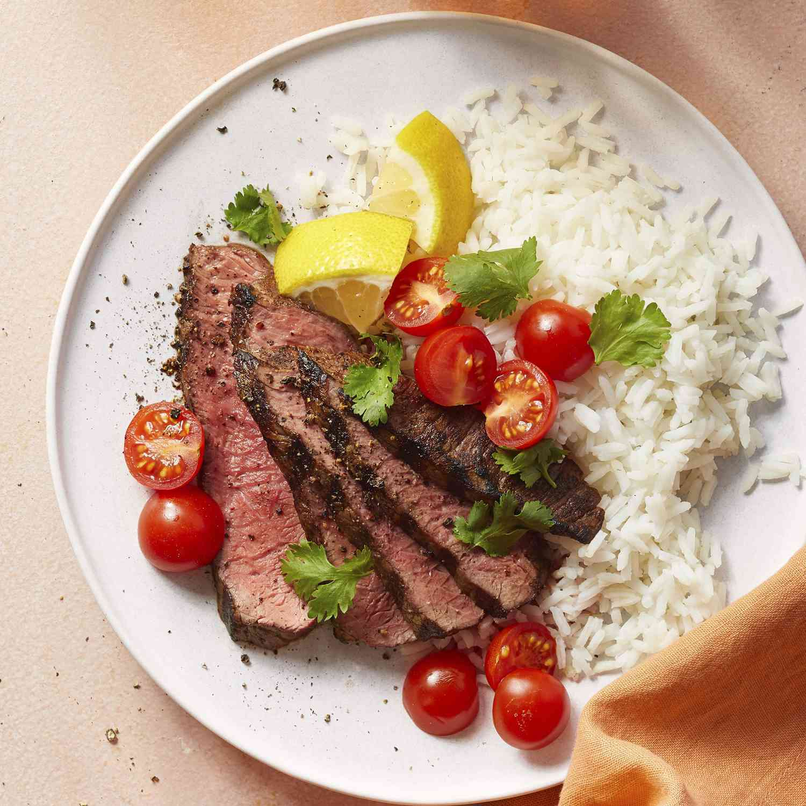

Churrascaria-Style Picanha

My version of the favorite item found in a Brazilian churrascaria. Serve with tomato vinaigrette.
Informations
- Prep Time: 15 mins
- Cook Time: 15 mins
- Additional Time
- Total Time: 1 hr
- Servings: 5
- Yield: 5 to 3 ounce portions
Ingredients
- 3 cloves garlic gloves, crushed, or more to taste
- 1 teaspoon kosher slat or more to taste
- 1 pound beef top sirloin, trimmed of excess fat
- ¼ cup lemon juice
- 1 tablespoon olive oil, or as needed
Directions
- Mix crushed garlic and salt together in a bowl until combined into a paste.
- Rub garlic paste onto meal until covered. Place into a bowl; cover with lemon juice. Marinate until the meat has absorbed desired flavor, 30 minutes to 4 hours. Remove meat from the lemon juice. Baste with olive oil.
- Preheat an outdoor grill for high heat and lightly oil the grate.
- Cook meat on the preheated grill, turning frequently until the outer edges are charred and center is uncooked, about 5 minutes. Remove from heat; slice off charred edges, cutting against the grain. Return the uncooked center portion of the meat back to the grill. Cook until the meat begins to firm and is hot and slightly pink in the center, about 5 minutes per side. An instant-read thermometer inserted into the center should read 140 degrees F (60 degrees C).
Nutrition Facts
- 143 Calories
- 8g Fat
- 2g Carbs
- 16g Protein
Cook's Note
If you choose to cook a second pound of sirloin, add another clov of garlic and 1 more teaspoon of kosher salt.
The removing, slicing, and returning of the meat to the grill will approximate the cooking method of picanha from a Brazilian churrascaria.
Return to main page